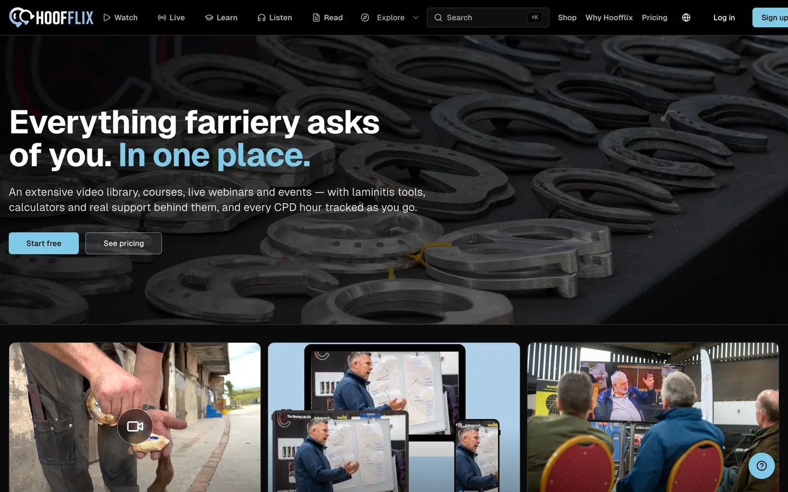
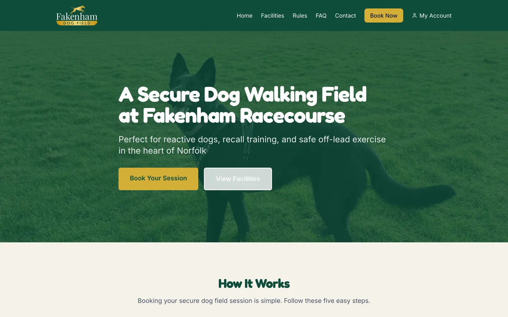
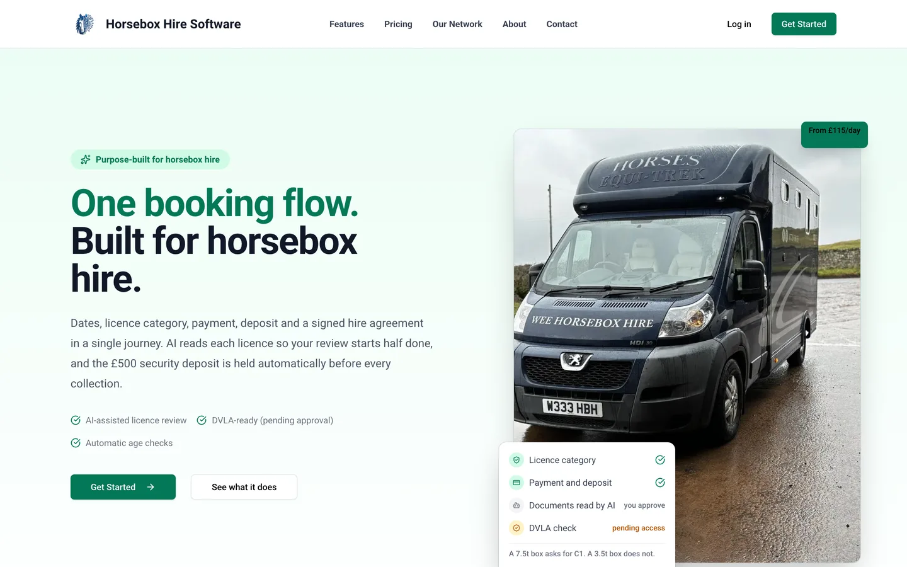

Websites, apps, and automation for UK businesses. You deal directly with the person who builds it.
One conversation, straight with the person who will build it. No brief template, no account manager, no relay.
And what it doesn't. Most of the saving happens here, before a line of code gets written.
Interface, logic, data, infrastructure. You watch it happen rather than waiting for a reveal.
Four that already have. These are their actual outcomes, lifted straight from the case studies.